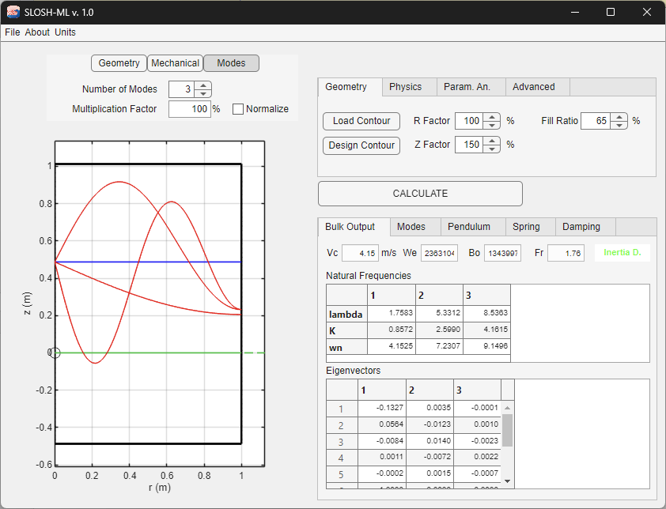

SLOSH-ML Main App

Using SLOSH ML
The instructions on running the Slosh-ML application are listed below.
- Before running the app file, ensure that all the dependencies listed above are installed.
- Run the app through the MATLAB interface.
- Navigate to the Geometry tab and load a contour file through the Load Contour button or design a contour file through the Design Contour button. To load a contour, the user will be prompted to open a file located in the contours directory. The user can choose from some simple test cases or input custom geometries. The process of building custom contour files is described above. After selecting a file, the chosen geometry will appear on the app figure, and the user can adjust the R and Z factors to scale the geometry horizontally or vertically. To design a contour, follow the instructions for the Contour Designer.
- To use the .stl loader, click "Design Contour" and upload a saved .stl file (you'll have to save it from Solidworks beforehand). Next, you have to either "Save" or "Save and Load" the loaded-in .stl file as a .txt file. After this, you have to re-run Slosh-ML and load in the saved .txt file, if you clicked "Save" to get the slosh dynamic parameters. Otherwise, simply open the saved .txt file and load it into the Slosh-ML software. However, the .stl file only works with cyclindrical tanks and struggles with tank shapes that have mutliple axes of symmetry (e.g., toridal, spherical, etc.). A new version will be pushed to fix the .stl file reader soon.
- To use the image loader, click "Design Contour" and load in an image file that is saved using the "Load Image" button. When prompted, enter both the origin and a reference point on the image. You then have to put in the distance between the two points in real-world units. After this, enter the starting point (r,z) coordinates. Then to trace the outer contour, use the line, circular, or ellipse segment features. You can either input starting and ending (r,z) values or enable "Draw Mode". Keep adding segments until the outer contour is complete and click "Finish Contour". Next, complete the aforementioned steps for the inner contour and click "Finish Inner Contour". Lastly, click "Save" or "Save and Load" to save the created contour as a .txt file and proceed forward.
- To create a contour from scratch, simply click "Design Contour", build the outer and inner contours using the add line, circular, or elliptical segment buttons, and putting in their end points, or enabling "Draw Mode". After completion of the desired shape, save the file as a .txt and load it in to get the mechanical analogy slosh dynamics parameters.
- If necessary, open the units tab and select the desired system of units. If any inputs have already been entered into the physics tab, they will be converted automatically. Please note that the previously defined geometry is assumed to be in the desired units already and will not scale automatically.
- Open the Physics tab and input the desired fluid density, surface tension, and acceleration. The user can also edit the integration settings through the Advanced tab, but this is not recommended as changing the number of shallow and deep tank modes could interfere with convergence.
- Press the calculate button. The core solver will compute the modes of the system and display the results in the app tables. The user can view eigenvectors and frequencies, mode information, pendulum parameters, and spring parameters in the Bulk Output, Modes, Pendulum, and Spring tabs, respectively. The calculation step can also be completed through the Parametric Analysis tab. This process is described below.
- The results displayed in the app figure can be exported to an image by selecting "Export Plot" under the Files menu. SLOSH-ML currently supports plot exports to PNG, PDF, or JPEG files.
- Navigate to the damping tab and select a tank geometry and correlation. If necessary, enter the number of baffles, baffle spacing, baffle width, and top baffle depth. The damping ratio of the given configuration will be computed automatically. Please note that if the selected geometry is cylindrical with baffles, the damping ratio will be normalized by the ratio of wave height to tank radius. Information on the damping correlations implemented in SLOSH-ML can be found below.
- To report a bug, select "Report Bug" under the About menu.
Parametric Analysis
After inputting the contour data, geometry settings, and physical parameters (steps 1-4 above), the user can analyze a range of accelerations and fill ratios automatically through the parametric analysis tab instead of the calculate button. This process is as follows:
Navigate to the parametric analysis tab and press “Select File.” Input a comma-separated file containing fill ratio and acceleration data. The file should have 2 or 3 columns, with the first containing accelerations, and the second containing percent fill ratios. The third column is optional and lists the time at each data point. The fill ratios and accelerations loaded from the file will overwrite the values specified by the interface controls. Note that fill ratio should range from 0 to 100, exclusive. Press “Compute” and wait for the app to finish the computation. Press “Export” and select an output file name and location. The output file will list the acceleration, fill ratio, Weber number, Froude number, Bond number, modal frequencies, modal masses, pendulum lengths, pendulum mass heights, amplitude ratios, spring mass hinge points, and spring stiffnesses for each data point as a comma-separated file.
Damping Correlations
Empty Cylindrical Tank
SLOSH-ML includes two damping correlations for an empty cylindrical tank. The first was developed by D. G. Stephens, et al, using experimental results from 12 and 36 inch diameter tanks [7]. A second correlation, which was derived independently by G. N. Mikishev and N. Ya. Dorozhkin, is also included [4].
Empty Spherical Tank
Damping in an empty spherical tank is computed using two correlations by Mikishev and Dorozhkin, with one corresponding to high fill ratios and one corresponding to low fill ratios [4]. These correlations characterize the damping ratio as a function of fill ratio experimentally, using a theoretical dependence on the viscosity parameter. It should be noted that this correlation has been scaled to account for differences between experimental and theoretical dependence on the viscosity parameter, as advised by H. Abramson [4].
Cylindrical Tank with Ring Baffles
SLOSH-ML includes the ring baffle damping correlation proposed by H. Bauer, which accounts for a superposition of equally spaced ring baffles and is a generalization of an earlier formula derived by J. W. Miles for a single baffle [6]. Further investigations by Shane Coogan and Steven Green concluded that Miles' correlation is inaccurate and non-conservative in actual experiments. Coogan proposes a multiplicative factor in the exponential of Miles' correlation which accounts for the underprediction of decay from theory [9]. SLOSH-ML includes the theoretical correlation by Bauer for a series of baffles and the corrected correlation by Coogan for a single baffle. Please note that baffle damping is nonlinear, and the damping ratio depends on the amplitude of oscillation. Since wave amplitude is unknown, the damping ratio will be normalized by wave height and displayed as damping ratio/(wave height/tank radius)^0.5.
As with the other datasets, the theory over-predicts damping as depth increases.
The small flat-bottomed cylinder, large-domed cylinder, and small spheroid data all indicate that the theoretical predictions of damping are inaccurate and non-conservative.
Equation (3) — General result for any tank shape:
γ = (15 * (4 / (3π))^2 * A_b * f_d^(2.5x) * √(δw))
/ (2√π (m_s/ρ) * Γ^2)
For a deep flat-bottom cylindrical tank, the relationship simplifies to:
γ = 2.83 * e^(−4.6 * (h_s / R)) * (A_b / A)^1.5 * √(δ / R)
The appropriate value of x depends on the experiment, but Figure 10 through Figure 12 show that a value of x ranging between 1.2 and 1.9 reconciles the predictions with the data for each case. A value of 1.55—the simple average of these limits—is recommended for use in the design of new systems until validation data are available. This value is used for the correction factor of the damping ratios applied to any type of cylinder with baffles.
Empty Toroidal Tank
An investigation by I. E. Sumner [8] for various toroidal tanks yielded plots of damping ratio as a function of fill height. The toroid minor radius was held constant at 6.35 cm and major radius varied from 9.5 cm to 22.2 cm. A curve fit of this plot is included in SLOSH-ML. It should be noted that the original experiment used Acetelyne Tetrabromide, which has a viscosity of 3.3e-6 m^2/s.
Empty Conical Tank
Damping ratios for an upwards-opening conical tank were investigated and plotted by G. N. Mikishev and N. Ya. Dorozhkin [4]. Curve fits of this plot are included in SLOSH-ML. Results are valid for cone half angles up to 20 degrees. Please note that in SLOSH-ML, the correlation is evaluated using the cone angle and fill height, so editing tank radius in the damping tab will not affect results.
References
- B. González, Pablo Martin García, Evan Thomas, Alba Casas Gómez, Juan Trobajo Flecha, Pablo Chiva Ruiz, Manuel Cortés Hernán, Rabia Shahid, Justin Effendi, Evan Sánchez, and Álvaro Romero-Calvo, "Open-Source Propellant Sloshing Modeling and Simulation," 2024 AAS Guidance, Navigation, and Control Conference, Breckenridge, CO, February 1-7, 2024, URL: https://www.researchgate.net/publication/377851094_Open-Source_Propellant_Sloshing_Modeling_and_Simulation
- D. O. Lomen, “Digital analysis of liquid propellant sloshing in mobile tanks with rotational symmetry,” Tech. Rep. CR-230, NASA, 1965.
- F. T. Dodge, The New “Dynamic Behavior of Liquids in Moving Containers.” Southwest Research Inst., 2000.
- H. Abramson, "The dynamic behavior of liquids in moving containers, with applications to space vehicle technology," Tech. Rep. SP-106, N67-15884, NASA, August 1966.
- R. Ibrahim, "Liquid sloshing," Tech. rep., Oxford, 2001, doi:https://doi.org/10.1006/rwvb.2001.0086.
- H. Bauer, "The damping factor provided by flat annular ring baffles for free fluid surface oscillations," pp. 13, Tech. Rep. TM-X-50183, X63-14246, NASA, November 1962.
- D. G. Stephens, L. H. Wayne, and T. W. Perry, "Investigation of the Damping of Liquids in Right-Circular Cylindrical Tanks, Including the Effects of a Time-Variant Liquid Depth," Tech. Rep. TN-D-1367, N62-14069, NASA, July 1962.
- I. E. Sumner, "Preliminary Experimental Investigation of Frequencies and Forces Resulting From Liquid Sloshing in Toroidal Tanks," Tech. Rep. TN-D-1709, NASA, June 1963.
- Shane B. Coogan and Steven Green, "Critical Review of Damping Prediction Methods for Annular Ring Slosh Baffles," AIAA 2019-4436, AIAA Propulsion and Energy 2019 Forum, August 2019.